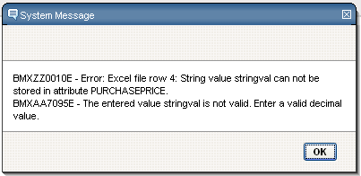
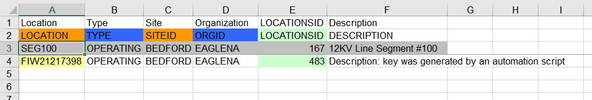
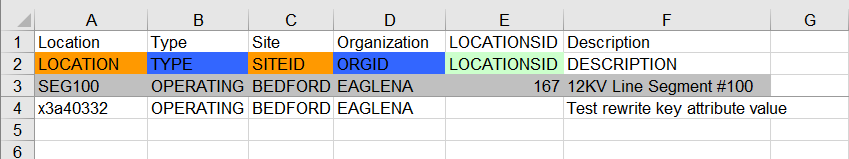

Simple Import
The Simple Import allows the import and update of flat data in IBM Maximo and can be used in all Maximo applications. It is not possible to import specification attributes (see chapter maximex Specification Import for more information on that topic). The simple import can not import or update related objects. If you need this feature than use the extended import which is described in chapter maximex Extended Import
Create Excel Import file
The data for the import or update must be available in Microsoft Excel file format. There are four ways to create the needed file:
- Manual creation of the Excel file according to the specification
- Download of an empty Excel template for the current IBM Maximo application and complete the data.
- Download of search results for the current IBM Maximo application
- Downloa d of a search result with a download template
NOTICE:
Independent of the method used to create the Excel file you should note the following:
- An Excel file should only contain columns which either have data or should be set to null. Therefore a downloaded template or search result should be reduced to the needed columns. The other columns must be deleted!
- The order of the columns in the Excel file is important. Check the correct order with a sample record and reorder the columns if necessary. The importer processes the columns from left to right.
Manual Creation of the XLS File
The EAM Importer for IBM Maximo expects the data in a specific form. The following conditions must be met:
- There must be one worksheet with the name "Simple". This worksheet contains the data which is imported or updated.
- The first row of the worksheet contains the title of the attributes. For the manual creation of the Excel file this row can be left empty since the importer does not evaluate it.
- The second row contains the attribute names.
- The third row is designated for an example record and can be left empty.
- All further rows starting (and including) from row number four are considered as data rows and are evaluated by the importer. IMPORT starts at row four!
- The available attributes in the excel file are read from the file from left to right. The attributes for the MBO (Maximo Business Object) are set in the same order as they are read from the excel file.
NOTICE:
The attributes on the MBOs are set in the same order in which they appear in the Excel
file. An exception to this are attributes which are part of the primary key of the Maximo
object in question. Key attributes are always set first. The attributes are set with the
usual methods of the MBOs and the inherent business logic is executed. The order of
the attributes in the excel document is therefore sometimes important. Example: the
attribute PARENT on a location object can only be set to a value if the SYSTEMID is
already filled in. If you are not sure about the correct order of the attributes then make
a test with one sample record. If unsure check also the order in the User Interface.
Download a XLS Template
An empty XLS template for the current Maximo application can be downloaded via the action menu "EAM Data Management Tool" -> "EAM Template Generator"

Illustration 12: Select Action menu option to download an empty XLS template
The created template fulfills the same conventions which are required for the manual creation of the Excel file:
- The attribute names have a background color. The following screenshot shows an empty template for the PERSON application.
Illustration 13: Screenshot of an empty Template in PERSON application
The background colors have the following meaning:
- orange: The attribute is (part of) the primary key
- blue: The attribute is required in the database (other attributes may also be required by the business logic of the object).
- light green: The attribute is the unique key of the object.
- light gray: The attribute is non persistent.
- White:The attribute is a "normal" persistent attribute of the object.
- Lavender: A cell is set by the import to this color if the cell in the XLS file is empty, but the corresponding attribute on the Mbo has a value and is re ad only (used by the Extended Import)
- red: Used for the separation column to separate the columns of the main object from the specification attributes (for the specification import) or from the attributes of the child object (for the Extended Import).
| Color | Meaning |
|---|---|
| orange | The attribute is (part of) the primary key |
| blue | The attribute is required in the data base (other attributes may also be required by the business logic of the object) |
| light green | The attribute is the uniquw key of the object |
| light grey | The attribute is non-persistent |
| white | The attribute is a "normal" persistent attribute of the object |
| lavender | A cell is set by the import to this color if the cell is the XLS file is empty, the the corresponding attribute on the Mbo has a value and is read-only (used by the extended import) |
| red | Used for the seperation column to seperate the colums of the main object from the specification attributes (for the specifitcation Import) or from the attributes of the child object (for the extended import) |
For templates and search results with specification attributes the following additional colors apply:
| Color | Meaning |
|---|---|
| light green | specification attribute with data type ALN |
| blue | specification attribute attribute with data type NUMERIC |
| lime | Specification attribute with data type TABLE (only available in Maximo 6 and later) |
- The created Excel template also contains a second worksheet which contains the data dictionary with detailed information for every attribute (default value, data type, field length,...)
- A third worksheet contains above color legend
NOTICE: A red background and white font in the attribute cells of download search results is used if the value of the attribute could not be retrieved due to Maximo configuration errors (missing relations) or internal errors (like data base errors)
NOTICE: The following attributes are not included in the template because they are always updates via the business logic of the objects: - CHANGEBY, CHANGEDATE - ENTERBY, ENTERDATE - HASPARENT, HASCHILDREN - HASLD - LANGCODE
Download a Search Result as an Excel Template
If you want to update existing data in an IBM Maximo application then you can download an Excel file with the existing data. First specify your search criteria in the list view of the application and select "EAM Data Management Tool" → "EAM Searchresult Download" from the action menu.
Illustration 14: Select Action menu option for seach result download
The downloaded file contains all information from the empty Excel Template plus the data from the current search result.
The generated Excel file contains almost all attributes of the un derlying main Maximo Object. If you need to export a large amount of objects you should consider the new Download Template functionality (see chapter Memory and Performance Issues for more information on performance and chapter EAM Data Management Tool Download Templates for more information on download templates).
Execute the Import
XLS File Upload
To start the import of data select "EAM Data Management Tool" -> "EAM Data Manager Importer" from the Select Action menu from the list view of your Maximo application.
Illustration 15: Select Action menu Item EAM Data Importer
The following dialog is opened:
Illustration 16: Import Data dialog box
Select the file and press the "Import Data" button. The file is sent to the Maximo Server and will be processed.
Processing Steps - Features
The Excel file will be analyzed. The following checks are performed:
- Is the uploaded file an Excel document?
- Is there a worksheet with the name "Simple"?
- Are there attribute names in the second row of the worksheet "Simple"?
- Are the attribute names unique?
- Are data rows available?
In case of an error, an error message is display to the user and the import is stopped.
- Analyze of the target object (the current application object)
- Check if the target object is valid. The name is automatically determined based on the Maximo application from where the import is started.
- Determine the object type. Is it a System Object (e.g. PERSON), SITE Object (e.g. LOCATION, ASSET,...) or a ORG Object (e.g. LABOR, CRAFT,...)?
- Determine the unique ID attribute name. This is unique for every object and assigned internally from Maximo. For example ASSETUID for Asset Objects or LABORID for Labor objects.
- Determine the key attribute(s) of the object.
- Check if all required attributes are available in the Excel document.
- In case of an error, an error message is displayed to the user and the import is canceled.
- For every data row (remember: starting from row four in the Excel file) do the following:
- Based on the information (available attributes in the excel document, known properties of the object type like key attributes, unique attributes, object type and the available data in Maximo) decide if we update existing data or insert new data.
- Now we check, if there is a column with the label $Delete is available for the object and the contents of this column is 1 (or Y). If the delete flag is set for the current record then the record is not inserted into Maximo (if it is not already available) or the record in Maximo is deleted (if available). For a Maximo object which is deleted all other attributes available in the import file are ignored. See chapter Delete records with Excel Import files $Delete
- Prior to creating a new object the default insert SiteID, default insert OrgID, default ItemSet and default CompSet are set on the MBO Set (depending on the object type)
- For a new object the key attributes are set first.
- Set other attributes in the same order as they appear in the Excel document.
- Save the object
- If there is an error (either during setting of attributes or during saving) the following behavior depends on the processing mode "Stop on Error" or "Continue on Error" (see Importer Processing Modes)
- If "Stop on Error" is used (no $IMPORTERROR column) then an error message is displayed to the user and the import is aborted. Every error message during import contains the line number of the Excel file and the attribute name which causes the problem.

Illustration 17: Error message during import dialog box
- If "Continue on Error" is used (a column $IMPORTERROR is available in the worksheet) the error message is not displayed to the user but written in the column $IMPORTERROR of the corresponding row. The import continues with the next
- Data rows from the Excel document which would modify an existing Maximo Object which is read only are skipped (e.g. already saved LABTRANS records)
NOTICE:
- If the attribute SITEID is missing in the Excel document but is required for the object the default insert site for the current user will be used for the import. Furthermore, a column with the SITEID is added to the Excel document.
- If an attribute in the Excel document is empty (no value in the Excel cell) then the attribute is set to NULL. It is therefore important to remove all columns from the excel document which should or cannot set to null or fill all columns with the appropriate values
- Attributes are only set if the new value from the Excel document is different from the current value in the MBO!
- If the unique ID attribute is missing or empty on the Excel document then this information is added to the Excel file.
After the Import
- A dialog with the Import summary is shown to the user
- the uploaded Excel file (with added information like unique ID values or selected SITEID) is sent back to the user
- The list view of the current Maximo application shows the records which were inserted or modified during the last data import.
Data Import Summary
After a succesful importa import summary message is displayed for the user.
Illustration 18: Data import summary dialog
This summary includes the following information:
- Number of newly created records / objects.
- Number of modified objects. Objects are counted even if no attribute values were modified because the attribute values in the Excel document were identical to the existing values.
- Number of skipped objects (objects which are read only and could not be modified)
- Number of deleted main objects. A deleted object is only counted, if it was available in Maximo a nd has to be deleted. If the object was not in available in Maximo in the first place it is not counted.
- Number of deleted child objects. Again here: Only existing object which where actually deleted are counted. Also: Child objects are only then counted i f they are deleted individually. Child objects are not counted if you delete a main object and child objects are deleted implicitly by the business logic.
- Number of records with errors.
Download of the imported Data as Excel Document
Depending on the available data in the XLS file values may be added to the XLS document (unique ID values or the default insert SITEID for the current user). The resulting Excel Document is downloaded to the client.
This feature is important if there is an error during the import.
Example:
You want to import 20 new ASSET records and there is an error in line 10. The import
is aborted, an import summary is displayed and the Excel file is sent back to the client.
The first records which where correctly imported contain a value in the unique ID
attribute ASSETUID.
If you correct the error in line 10 and reimport the Excel document then the first 9
ASSET records will be identified by the known ASSETUID and therefore will not be
inserted twice! The following rows (10, 11, 12, …) in the Excel document will be inserted
as new ASSET objects.
In case of an error it is therefore important to continue with the downloaded Excel document to avoid duplicate records.
Update of the List View
After you close the import summary dialog the list view of the current Maximo application shows the currently inserted and modified records. Internally a where clause is created with all the unique ID values of the affected Maximo objects. This update of the list view only happens if not more than 500 records are affected or inserted. Otherwise, the created SQL query would get too long and a database error might occur.
Handling of Maximo and Excel Datatypes
Import of Data from Excel
Attributes of Maximo Objects can have various datatypes. Depending on the datatype of the attribute and the formatting of the Excel cell the processing differs. The processing is done in the following order:
- If the Maximo attribute is of datatype „UPPER", „LOWER", „ALN", „LONGALN", „CLOB", „YORN" or „GL" the content of the Excel cell is interpreted as string and the object attribute value is set as string.
- If the Excel cell is formatted as date then the Maximo object at tribute is set as date.
- If the Excel cell is formatted as Number or Currency, then the Maximo object attribute is set as double value.
- All remaining attributes are read as string from the Excel Cell and set as string value on the Maximo object.
Export of Data in Excel
When downloading a search result as Excel document then the Excel cells have the following data format:
- Maximo attributes with the datatypes „UPPER", „LOWER", „ALN", „LONGALN", „CLOB", „YORN" and „GL" will be exported as strings.
- Maximo attributes with the datatypes „AMOUNT", „DECIMAL", „DURATION", „FLOAT", „INTEGER", "BIGINT" and „SMALLINT" will be written as float values in the Excel cells.
- Maximo attributes with the datatypes „DATE" and „DATETIME" will be written as Date values. The cell format is „dd.MM.yyyy" for DATE and „dd.MM.yyyy hh:mm:ss" for DATETIME
- Maximo attributes with the datatype "TIME" are formatted as Excel date format with the formatting „hh:mm:ss".
NOTICE:
Maximo attributes with the datatypes „BLOB", „CRYPTO" and „CRYPTOX" are not exported!
The following attributes are not included in the template because they are always
updates via the business logic of the objects:
- CHANGEBY, CHANGEDATE
- ENTERBY, ENTERDATE
- HASPARENT, HASCHILDREN
- HASLD
- LANGCODE
Important: : A cell in an Excel worksheet can hold a string with a maximum length of up to 32767 characters. If the content is longer it is automatically (and silently) truncated to this maximum length. If you have long description fields which are longer then the content of the excel cell is incomplete!
Handling of AUTOKEY Objects
The import of AUTOKEY Objects is a special case. Maximo assigns the primary key or a part of the primary key itself. One example in standard Maximo which uses autokeys is the Preventive Maintenance application. The PMNUM is the autokey column. If you do not specify a value for the PMNUM then Maximo automatically determines the next value for the PMNUM field (usually an number starting with 1000).
For AUTOKEY objects two columns are added in the Excel document!
- The column PMNUM. This is the autokey column which is filled by Maximo.
- The column PMUID. This is the unique ID column and will also be written to the Excel document (like for other objects)
Which objects use the autokey feature can be configured in the Organisations application.
Handling of Key Values by Business Logic (not AUTOKEY)
Primary keys of objects in Maximo can be specified during the import or the key values
can be generated by Maximo with the Autonumber feature (the primary key column
is then a AUTOKEY column, see above section).
Another possibility is to use the Maximo business logic (Java classes, automation
scripts) to set key values on object creation. These key values can be generated
depending on other attribute values, they can be organized in number ranges or the
key values can be obtained from another system altogether.
Starting with the September 2016 release of the Data Management Tools there is
better support for these type of key generation.
Key values generated by Maximo (or modified by Maximo) can now be written back to
the Excel import file! The processed response file then contains the keys which are
actually used by the Maximo object.
There are two new system properties (see chapter Configuration Options for the EAM
Importer 12.1) which allow you to control the behaviour of this new feature.
The following two examples should illustrate this feature:
-
Lets assume that the LOCATION attribute in the locations application is generated by Maximo via the business logic according to some internal business needs. If you do not specify a value for the LOCATION attribute, then the generated value is written back to the Excel import file. The import file: will result in the following processed Excel file: 
This feature also works for the specification import and the extended import. -
The second example is a JOBPLAN import. Here we can take advantage of this feature in the child object JOBTASK. The import file:

will reslut in the following processed response file:
The default installation of the EAM Datamangement Tools will insert the generated key calues in the processed Excel file only if the corresponding cell in the excel file was empty and the key value was not provided by the user.
If you set the system property „EAM.Importer.KeyWriteback.RewriteChanged" to true, then the final key values of the Maximo object are compared with the specified values in the Excel importfile and differences are written back to the Excel importfile.
Again an example:
Most of the key attributes are defined as UPPER and any lowercase input is converted
to the corresponding uppercase string. If you have set the system property
„EAM.Importer.KeyWriteback.RewriteChanged" to 1 and import the following simple
LOCATION example:

the resulting processed excel file would contain the LOCATION attribute value in uppercase:
Setting and changing Object Status during the import
For imports and updates with the EAM Import tool you can include the attribute STATUS in the import file. The way of processing depends on whether the Maximo object is a stateful object (Mbo is an instance of StatefulMbo) or not.
- If the object is not stateful then the importer handles the STATUS attribute like every other attributes and simply set the attribute to the new value
- If the object is stateful a changeStatus call for the Mbo (StatefulMbo) is executed.
For status changes during an initial import or an update corresponding entries for the
status history are created and are visible in the status history dialogs (e.g. View Work
Order History in application Work Order Tracking)
You can also specify values for the attributes STATUSDATE and NP_STATUSMEMO
The attributes STATUSDATE and NP_STATUSMEMO are ignored during the import if
you do not set a value for the attribute STATUS.
With version 4 of the EAM Datamanagement Tools you can also change the status of child objects during an extended import.
Handling of Time and Datetime values
Date and time values from the XLS import file are interpreted as local times for the user executing the import. Therefore, it is important th at you set a correct time zone in the user profile executing the imports. If no time zone is specified in the user profile the default timezone (the time zone from the Maximo server) is used (which might be correct if all your users and the server are in the same time zone).